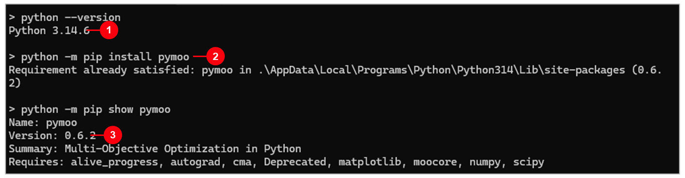
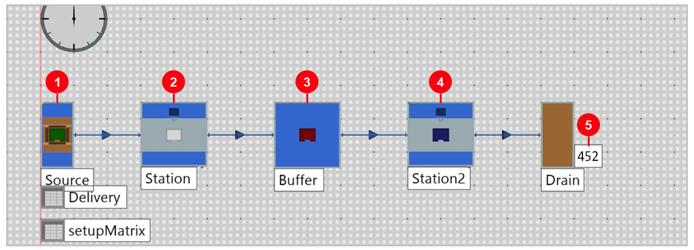
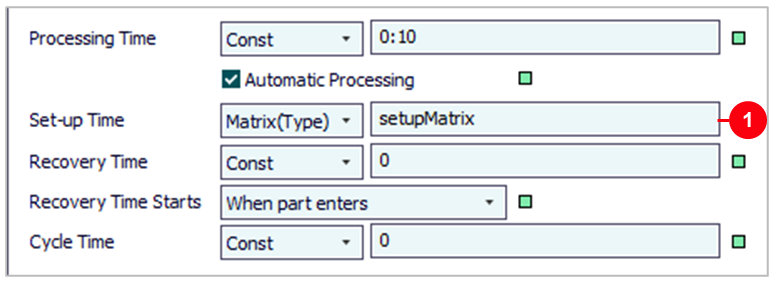
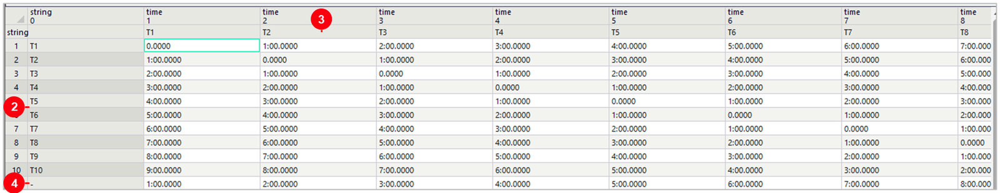
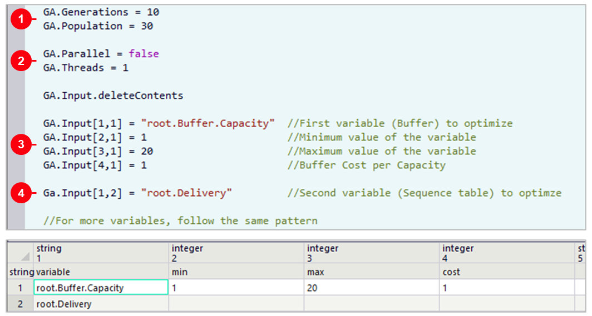
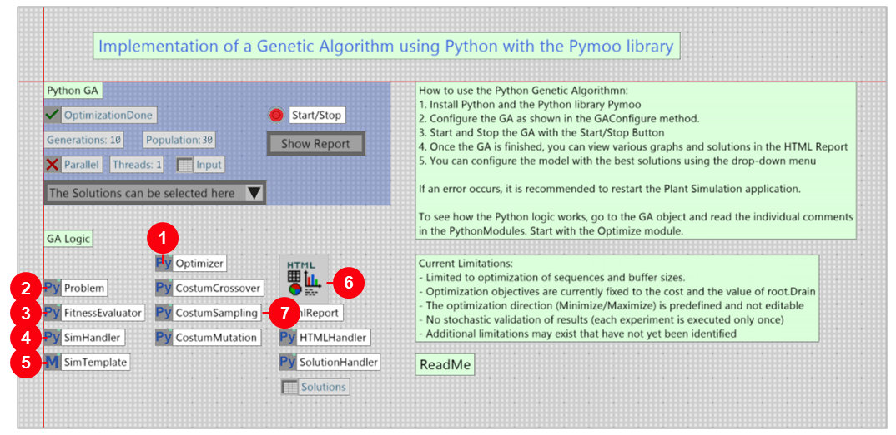
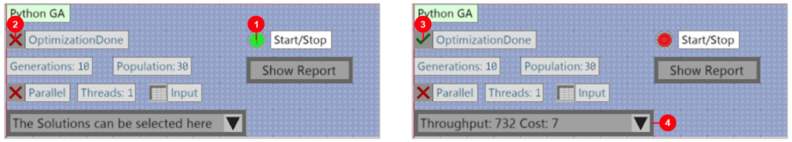
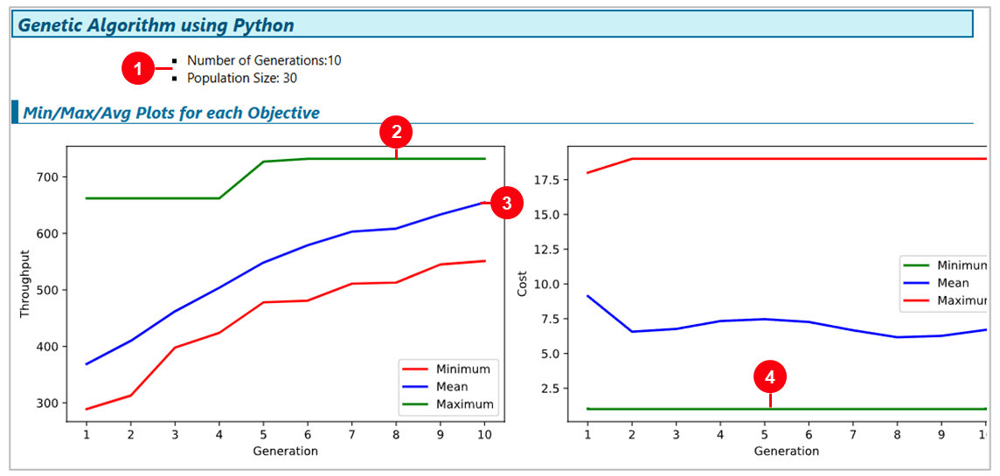
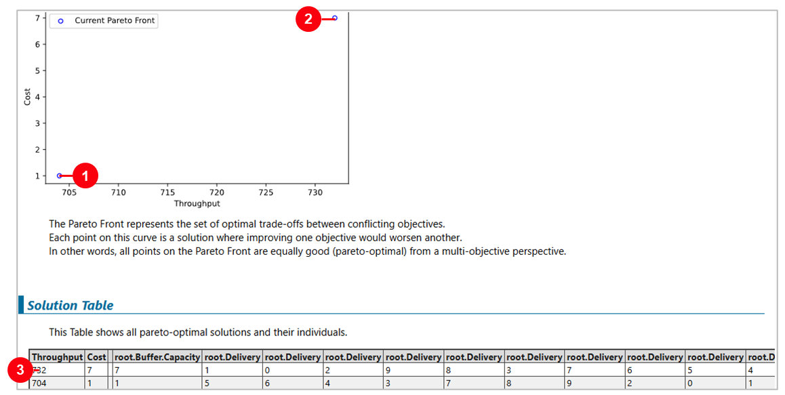
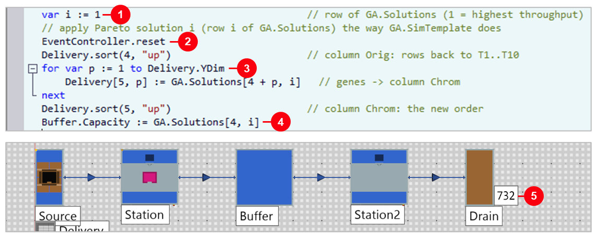

4. Python GA Demo
วัตถุประสงค์การเรียนรู้
- ติดตั้ง pymoo และเปิดโมเดลตัวอย่าง Python GA Demo ให้รัน Python ได้ (อนุญาตให้โมเดลเข้าถึงคอมพิวเตอร์)
- อ่านโจทย์ ตั้งค่า GA ใน GAConfigure และรู้ว่า PythonModule แต่ละตัวทำอะไร
- รัน GA อ่าน Report และ Pareto Front แล้วใส่คำตอบกลับโมเดลด้วย Method ApplySolution ได้
โมเดลตัวอย่างตัวที่สามที่ติดมากับ Plant Simulation 2606 ต่อจาก Factory 51 และ Small Parts Production — ยังไม่ต้องสร้างโมเดลเอง แค่เปิดตัวอย่างของ Siemens ที่ใช้ Python (ไลบรารี pymoo) หาลำดับงานและขนาด Buffer ที่ดีที่สุด 2 เป้าหมายพร้อมกัน ทั้งหมด 9 ขั้นตอน ให้เห็นว่าโมเดลจำลองต่อกับ Python เพื่อหาคำตอบอัตโนมัติได้แบบไหน (บท 01–09 จะสอนสร้างโมเดลของตัวเอง เริ่มที่ บท 01 สร้างโมเดลแรก)
Examples\Demo\Python_GA_Demo.spp · ผลที่วัดได้ใน 2606: ผลผลิต 452 → 732 ชิ้น/วัน หลังใช้คำตอบของ GA
ภาพรวม 9 ขั้นตอน
| ขั้น | หัวข้อ | ทำอะไร |
|---|---|---|
| 1 | ติดตั้ง pymoo | python -m pip install pymoo |
| 2 | เปิดตัวอย่าง + Save As | Examples\Demo\Python_GA_Demo.spp |
| 3 | อนุญาต Python | Model Settings › Security |
| 4 | อ่านโจทย์ | ไลน์ 10 ชนิด มี Set-up · 452 ชิ้น/วัน |
| 5 | ตั้งค่า GA | GAConfigure: 10 รุ่น × 30 คำตอบ |
| 6 | ดูโค้ด Python | 9 PythonModule + SimTemplate |
| 7 | กด Start/Stop | 13–25 วินาทีบนเครื่องที่ทดสอบ |
| 8 | อ่าน Report | กราฟ 2 เป้าหมาย + Pareto |
| 9 | ใส่คำตอบกลับโมเดล | Method ApplySolution → 732 |
Workflow: ใครทำอะไร
| ลำดับ | งาน | รายละเอียด | ใครทำ |
|---|---|---|---|
| 1 | เตรียมเครื่อง | ติดตั้ง pymoo · อนุญาตให้โมเดลเข้าถึงคอมพิวเตอร์ · Save ไฟล์ | ผู้ใช้ (ขั้น 1–3) |
| 2 | ตั้งโจทย์ | GAConfigure: ตัวแปร ช่วงค่า ต้นทุน จำนวนรุ่น | ผู้ใช้ (ขั้น 4–5) |
| 3 | สร้างคำตอบ | pymoo (NSGA-II) สุ่ม ผสม กลายพันธุ์ คำตอบรุ่นละ 30 ตัว | Python |
| 4 | ประเมินคำตอบ | PlantSimulationConsole รันโมเดล 1 วันต่อคำตอบ อ่านผลที่ Drain | PtS Console |
| 5 | เลือกคำตอบ | อ่าน Report + Pareto · ใส่คำตอบกลับ · รันยืนยัน | ผู้ใช้ (ขั้น 8–9) |
ในตัวเลข (วัดใน PtS 2606): 10 รุ่น (Generations) · 30 คำตอบต่อรุ่น · 2 เป้าหมายพร้อมกัน · ผลผลิตเพิ่ม 62% (คำตอบที่ 1)
PlantSimulationConsole.exe
ให้เปิดไฟล์ .spp ที่ Save ไว้มารันทีละคำตอบ ผลผลิตที่ได้ส่งกลับให้ pymoo คิดรุ่นถัดไปขั้นที่ 1: ติดตั้ง Python และ pymoo

- 1
python --version— ต้องเป็น 3.12, 3.13 หรือ 3.14 (Help 2606) · เครื่องที่ทดสอบใช้ 3.14.6 - 2
python -m pip install pymoo— ติดตั้ง pymoo พร้อม numpy, scipy, matplotlib - 3
python -m pip show pymoo— ตรวจว่าติดตั้งแล้ว · เครื่องที่ทดสอบได้ Version 0.6.2
setPythonDLLPath("...\python314.dll") ระบุตัวที่ Plant Simulation ใช้ (Help 2606)
· ติดตั้งให้เสร็จก่อนเปิด Plant Simulationติดตั้งครั้งเดียวต่อเครื่อง — ภาพนี้ถ่ายหลังติดตั้งแล้วจึงขึ้น Requirement already satisfied ถ้าติดตั้งครั้งแรกจะขึ้น Successfully installed ... pymoo-0.6.2
ขั้นที่ 2: เปิดตัวอย่าง Python_GA_Demo แล้ว Save As
- 1Example — ไลน์ผลิตที่ GA จะปรับ (ขั้นที่ 4)
- 2Python GA — แผงควบคุม: Start/Stop, Show Report, Drop-down เลือกคำตอบ
- 3ReadMe — วิธีใช้ 5 ข้อจาก Siemens
- 4Current Limitations — ปรับได้แค่ลำดับ + ขนาด Buffer · เป้าหมายตายตัว · ประเมินคำตอบละ 1 รอบ
File › Open → ...\Plant Simulation 2606\Examples\Demo\Python_GA_Demo.spp
แล้ว File › Save As ไปโฟลเดอร์ของตัวเองทันที (GA ใช้ไฟล์ที่ Save ไว้) · Class Library › Models › ExamplePlant Simulation เปิดโมเดลเป็น 3D ภาพนี้เป็นมุมมองจากด้านบน (Planning View) — Frame GA ถูกวางเป็นแผงสีน้ำเงินใน Example
ขั้นที่ 3: อนุญาตให้โมเดลเรียก Python
- 1
File › Model Settingsแท็บGeneral - 2Security — คลิกช่อง
Prohibit Access to the Computerให้เครื่องหมายถูกหายไป ☐ (ตัวอย่างเปิดไว้ ☑) - 3
OKแล้วFile › Save
ขั้นที่ 4: โจทย์ — ไลน์ 10 ชนิด เปลี่ยนชนิดต้อง Set-up

- 1Source — ปล่อยงาน 10 ชนิด T1–T10 วนตามลำดับในตาราง
Delivery - 2Station — 0:10 ต่อชิ้น + Set-up เมื่อเปลี่ยนชนิด
- 3Buffer — ความจุ 15 ชิ้น
- 4Station2 — Negexp เฉลี่ย 1:00 + เครื่องเสีย (Availability 95%)
- 5452 ชิ้น — ผลผลิต 1 วัน (ลำดับเดิม, Buffer 15)
Set-up ตามชนิด — ตาราง setupMatrix
ดับเบิลคลิก Station › แท็บ Times แล้วดับเบิลคลิก setupMatrix


- 1
Set-up Time = Matrix(Type)— ดูเวลาในตาราง setupMatrix ตามชนิดชิ้นงาน - 2แถว / คอลัมน์ = ชนิดก่อน–หลัง — ห่างกัน 1 ชนิด = 1:00 · ห่าง 9 ชนิด = 9:00
- 3ชนิดเดียวกัน = 0 — ไม่ต้อง Set-up
- 4แถว "-" — ชิ้นแรก ยังไม่มีชนิดก่อนหน้า
ตรวจได้: 10 ชิ้นใช้ 100 วินาที + 30 นาที ≈ 31.7 นาที → 1 วันได้ราว 455 ชิ้น ใกล้กับ 452 ที่วัดได้ (30 และ 18 นาทีคิดจากตาราง setupMatrix รวมตอนวนกลับจาก T10 ไป T5 ไม่ได้วัดจากโมเดล)
ขั้นที่ 5: ตั้งค่า GA ใน Method GAConfigure
ดับเบิลคลิก GAConfigure (ภาพบน) และตาราง GA.Input (ภาพล่าง)

- 1
Generations 10, Population 30— 10 รุ่น รุ่นละ 30 คำตอบ - 2
Parallel false, Threads 1— รันทีละคำตอบ - 3ตัวแปรที่ 1
root.Buffer.Capacityช่วง 1–20 ต้นทุน 1 ต่อช่อง - 4ตัวแปรที่ 2
root.Delivery= ลำดับของ 10 ชนิด
ขั้นที่ 6: ข้างใน Frame GA — PythonModule ทำอะไรบ้าง
ดับเบิลคลิก Frame GA

- 1Optimizer — เริ่มที่นี่: ตั้ง NSGA-II ของ pymoo แล้วสั่งค้นหา
- 2Problem — อ่าน GA.Input → ตัวแปร 11 ตัว (Buffer 1 + ลำดับ 10)
- 3FitnessEvaluator — ให้คะแนน 2 ค่า: ผลผลิต + ต้นทุน Buffer
- 4SimHandler — เขียนไฟล์ simtalk แล้วเรียก PlantSimulationConsole.exe
- 5SimTemplate — Method ที่ Console รันกับทุกคำตอบ
- 6HtmlReport — HTMLHandler วาดกราฟ · SolutionHandler เขียน Solutions + Drop-down
- 7Custom… — สุ่ม / ผสม / กลายพันธุ์ แยกยีนลำดับกับยีน Buffer
จากโค้ดในโมเดล: ยีนลำดับใช้ Edge Recombination + Inversion · ยีน Buffer ใช้ Uniform crossover + PM mutation · ประชากร 30 รุ่นละ 30 ลูก ตัดคำตอบซ้ำ
โค้ด Python ในโมดูล Optimizer
- 1
from pymoo…— ใช้ NSGA-II และตัวดำเนินการของ pymoo (ติดตั้งในขั้นที่ 1) - 2
import PlantSimulation as ps— ตัวเชื่อม Python กับโมเดล - 3
ps.importPythonModule(current.Problem)— เรียกโมดูลอื่นใน Frame เดียวกัน (current= Frame GA) - 4
Import— โหลดโค้ดเข้า Python หลังแก้ (Shift + Import= ล้างค่าเดิม, Help 2606)
ขั้นที่ 7: คลิก Start/Stop แล้วรอ

- 1
Start/Stop— คลิกแล้วไฟเป็นสีเขียว = GA กำลังรัน - 2
OptimizationDone✗ ระหว่างรัน - 3
OptimizationDone✓ จบแล้ว 13–25 วินาทีบนเครื่องที่ทดสอบ (5 รอบ) - 4Drop-down — แสดงคำตอบ เช่น
Throughput: 732 Cost: 7
.spp ที่ Save ไว้ผ่าน PlantSimulationConsole ไม่ใช่โมเดลที่เปิดอยู่
· คลิก Start/Stop อีกครั้ง = หยุดกลางทาง · ถ้าเกิด error ให้ปิด Plant Simulation แล้วเปิดใหม่ตาม ReadMeขั้นที่ 8: Show Report — ผลดีขึ้นทุกรุ่น
คลิก Show Report — HtmlReport เปิดเป็นแท็บในหน้าต่างหลัก

- 1Number of Generations 10, Population 30 — ตามที่ตั้งในขั้นที่ 5
- 2เส้นเขียว = ดีที่สุดในรุ่น — ผลผลิตขึ้นถึง 732 ราวรุ่นที่ 5–6
- 3เส้นน้ำเงิน = ค่าเฉลี่ย — จาก ~370 เป็น ~655 ทั้งรุ่นดีขึ้น
- 4Cost — เส้นเขียว = ต่ำสุด 1 ตั้งแต่รุ่นแรก
Pareto Front — 2 คำตอบ ให้คนเลือก
เลื่อนลงใน HtmlReport

- 1704 ชิ้น ต้นทุน 1 — Buffer 1 ช่อง
- 2732 ชิ้น ต้นทุน 7 — Buffer 7 ช่อง
- 3Solution Table — ค่ายีนของแต่ละคำตอบ: Buffer + ตำแหน่งของ T1–T10
ขั้นที่ 9: Drop-down ใน 2606 ใส่คำตอบไม่ครบ
- 1เลือกคำตอบใน Drop-down — SolutionHandler เขียนคำตอบลงโมเดล
วัดจริง: Buffer เปลี่ยนเป็น 7 / 1 แต่ลำดับใน Delivery ไม่เปลี่ยน → รันได้แค่ 452 / 450 ชิ้น · ที่เห็นในโค้ด: ไม่ได้เรียงแถวตาม Orig ก่อนแบบที่ SimTemplate ทำ และเขียนยีนลำดับแค่ 9 จาก 10 ช่อง
| วิธีใส่คำตอบ (รัน Example 1 วัน) | คำตอบ 1 (Buffer 7) | คำตอบ 2 (Buffer 1) |
|---|---|---|
| GA รายงาน (Solutions) | 732 | 704 |
| Drop-down ของตัวอย่าง | 452 | 450 |
| Method ApplySolution (ด้านล่าง) | 732 | 704 |
ใส่คำตอบด้วย Method ApplySolution
สร้าง Method: Toolbox › Information Flow › Method ลากลง Frame Example ตั้งชื่อ ApplySolution แล้ววางโค้ดนี้:
var i := 1 // row of GA.Solutions (1 = highest throughput)
// apply Pareto solution i (row i of GA.Solutions) the way GA.SimTemplate does
EventController.reset
Delivery.sort(4, "up") // column Orig: rows back to T1..T10
for var p := 1 to Delivery.YDim
Delivery[5, p] := GA.Solutions[4 + p, i] // genes -> column Chrom
next
Delivery.sort(5, "up") // column Chrom: the new order
Buffer.Capacity := GA.Solutions[4, i]
- 1
var i := 1— แถวของ GA.Solutions (1 = 732, 2 = 704) - 2
Reset— ล้างชิ้นงาน ก่อนลดความจุ Buffer - 3เรียง Orig → ใส่ Chrom → เรียง Chrom — ได้ลำดับใหม่ แบบเดียวกับ SimTemplate
- 4
Buffer.Capacityตามคำตอบ แล้วกดF5ในหน้าโค้ด - 5
Startที่ EventController — รัน 1 วัน ได้ 732 ชิ้น
สรุปผล: ไลน์เดิม เทียบคำตอบของ GA (วัดใน 2606)
| หัวข้อ | ไลน์เดิม | คำตอบ 1 | คำตอบ 2 |
|---|---|---|---|
| ลำดับใน Delivery | T5 T6 T4 T1 T3 T7 T2 T8 T9 T10 | T2 T1 T3 T6 T10 T9 T8 T7 T5 T4 | T9 T10 T8 T4 T3 T1 T2 T5 T6 T7 |
| Buffer (= ต้นทุน) | 15 | 7 | 1 |
| Set-up ต่อรอบ 10 ชิ้น | 30 นาที | 18 นาที | 18 นาที |
| ผลผลิต 1 วัน | 452 ชิ้น | 732 ชิ้น (+62%) | 704 ชิ้น (+56%) |
ผลผลิตวัดจริง: รัน Example 1 วันหลังใส่คำตอบด้วย ApplySolution · Set-up คิดจาก setupMatrix · GA 5 รอบ ได้ 2 คำตอบเดิมทุกรอบ
Python GA เทียบ GAWizard ในโปรแกรม
| หัวข้อ | GAWizard (มีในโปรแกรม) | Python GA Demo (pymoo) |
|---|---|---|
| ติดตั้งเพิ่ม | ไม่ต้อง | Python 3.12–3.14 + pymoo · ปิด Prohibit Access |
| เป้าหมาย | ค่า Fitness เดียว (รวมหลายเรื่องเป็นคะแนนเดียว) | 2 เป้าหมายแยกกัน → ชุดคำตอบ Pareto |
| ตั้งโจทย์ | หน้าต่าง GAWizard + ตาราง GA | Method GAConfigure + ตาราง Input |
| ปรับวิธีของ GA | ตามตัวเลือกในหน้าต่าง | แก้โค้ด Python ได้ทุกส่วน |
| ข้อจำกัดของตัวอย่าง | — | ลำดับ + Buffer เท่านั้น · เป้าหมายตายตัว · คำตอบละ 1 รอบ |
ปัญหาที่พบบ่อย และวิธีแก้ (2606)
| อาการ | วิธีแก้ |
|---|---|
| กด Start/Stop แล้วขึ้น Access to the computer is prohibited | ขั้นที่ 3: คลิกช่อง Prohibit Access to the Computer ออก แล้ว Save |
| Python หา pymoo ไม่เจอ | pip install pymoo ใน Python ตัวที่ Plant Simulation ใช้ (setPythonDLLPath ถ้ามีหลายตัว) |
| Python รุ่นเก่ากว่า 3.12 | 2606 รองรับ 3.12, 3.13, 3.14 เท่านั้น (Help 2606) |
| เลือก Drop-down แล้วผลผลิตยังเท่าเดิม (452) | ใส่คำตอบด้วย Method ApplySolution (ขั้นที่ 9) |
ValueError: Capacity … must not be smaller than the number of MUs | Reset โมเดลก่อนใส่คำตอบ (ApplySolution ทำให้แล้ว) |
| แก้โมเดลแล้ว GA ยังให้ผลเดิม | Save ก่อนกด Start/Stop: GA รันไฟล์ที่ Save ไว้ |
| Error แล้วกดใหม่ไม่ทำงาน | ปิด Plant Simulation แล้วเปิดใหม่ (ReadMe) · numpy ไม่รองรับการเริ่ม Python ใหม่ในโปรแกรมเดิม (Help) |
| รันหลายรอบได้คำตอบเดิม | ปกติ: Optimizer ตั้ง seed = 3 · แต่ละคำตอบประเมินแค่ 1 รอบ |